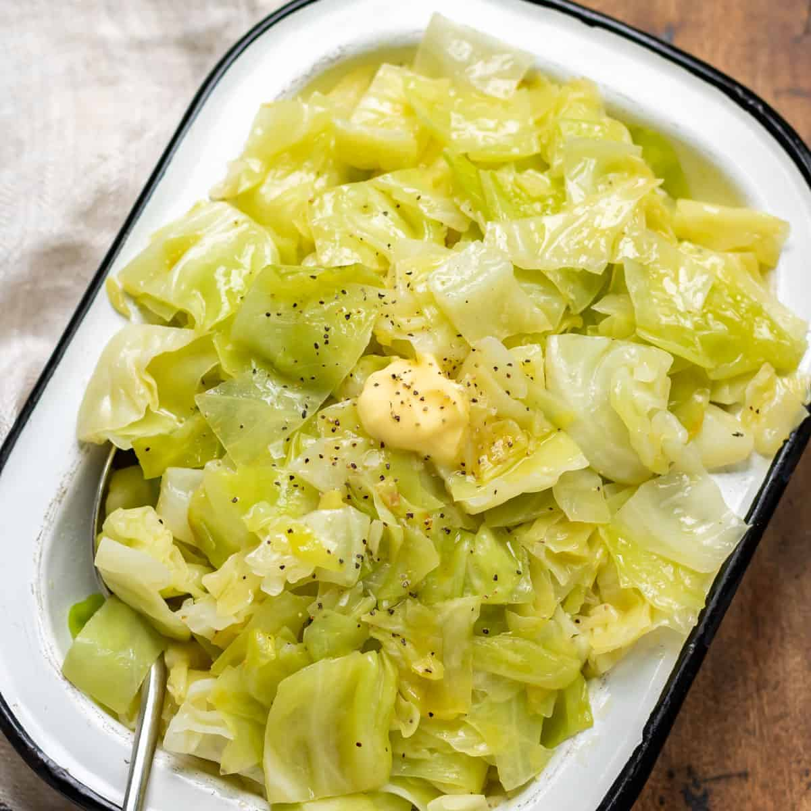

Buttered Cabbage

Are you feeling lazy? If you've got the cabbage I've got the butter...
It's one of those days. No think pls, food appear pls. This is that recipe.
Ingredients
- Cabbage
- Salt and Black Pepper
- Butter
Steps
- Put on Youtube or Netflix or whatever you use.
- Take cabbage split in in half and rinse. Then split those halves in half and remove the core.
- Choppa, choppa, choppa the cabbage as much as you need and save the unchoppa'd for later.
- Put pan on stove. Heat under pan - max. Butter in pan.
- Sigh... (Do it. This is an important step)
- Telepath the choppa'd cabbage in pan and add salt and pepper.
- It will cook itself trust me, but stir occasionally for good heat distribution.
- Like 10 min of watching Youtube? I never pay attention, its you're done.
Back